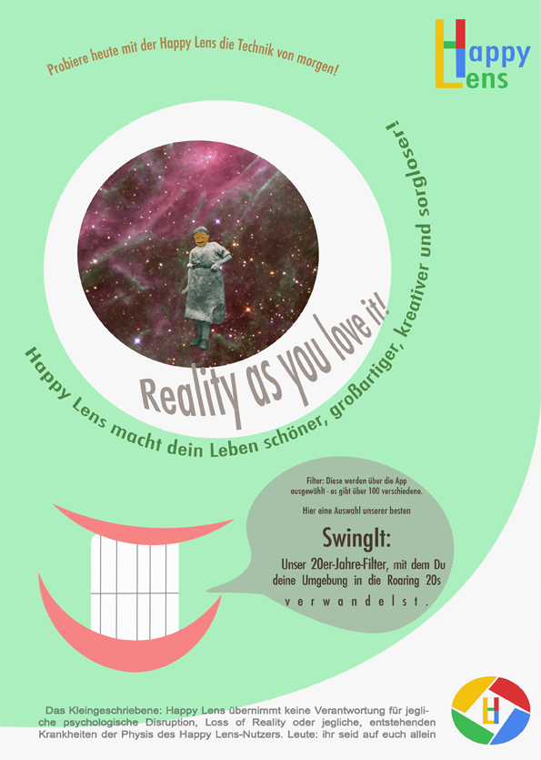

Lade dir hier das einzigartige und seltene Plakat zu unserem SwingIt-Filter und hier zu unserem SmileIt-Filter herunter.
Hört euch hier den ebenso seltenen, aber großartigen Happy Lens-Radiospot an.
Zurück zur Startseite - This Website is powered by Anne Enderle, Katharina Gedrat and Vivian Hernandez